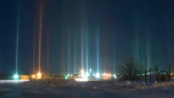
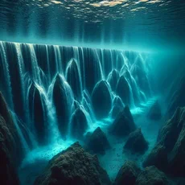

ВИДЫ

Оптическая иллюзия, которая представляет собой вертикальную полосу света, тянущуюся вверх от яркого источника света: заходящего Солнца, Луны или даже мощного уличного фонаря.
Оптическая иллюзия, расположенная на юго-западном побережье Маврикия, у подножия горы Ле Морн-Брабант.
